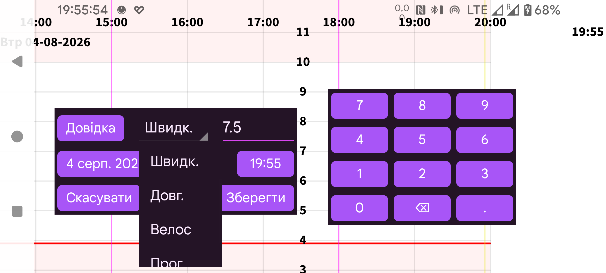

ar de es hi it ja ko nl pl ru tr uk uz zh en
За допомогою Нова сумаможна вводити числа, пов’язані з довільною міткою. Мітки налаштовуються через ліве меню→Налашт.→Числові етикетки. Суми з певною міткою відображатимуться на висоті графіка, визначеній цією міткою.
Згодом значення можна змінити тривалим натисканням. Його також можна вибрати зі списку введених значень у лівому середньому меню→Список.
Також можна отримувати дані про дозу інсуліну з NovoPen® 6 або NovoPen Echo® Plus скануванням NFC-ручки. Після сканування можна змінити мітку, під якою дози зберігатимуться в Juggluco, і обмежити імпорт дозами, введеними після певних дати й часу. Якщо в пам’яті ручки є сотні доз, їх отримання через NFC у Juggluco може тривати понад 30 секунд.
Деякі глюкометри можуть надсилати результати вимірювання глюкози з пальця до Juggluco через Bluetooth. Див. ліве меню→Налашт.→Обмін даними→Глюкометри.
У лівому меню→Налаштування→Числові етикетки також указується мітка для введення вуглеводів у прийомі їжі. У вікні Нова сумадля цієї мітки показується кнопка Їжа . Натискання кнопки Їжа відкриває екран, на якому прийом їжі складається з інгредієнтів. Загальний вміст вуглеводів обчислюється автоматично. Можна також указати бажану кількість вуглеводів, і Juggluco розрахує необхідну кількість одного інгредієнта.
Виключити: виключити вимірювання глюкози крові з Калібрування, оскільки рівень глюкози зростає чи падає або датчик ще прогрівається.